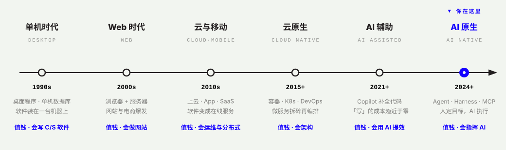
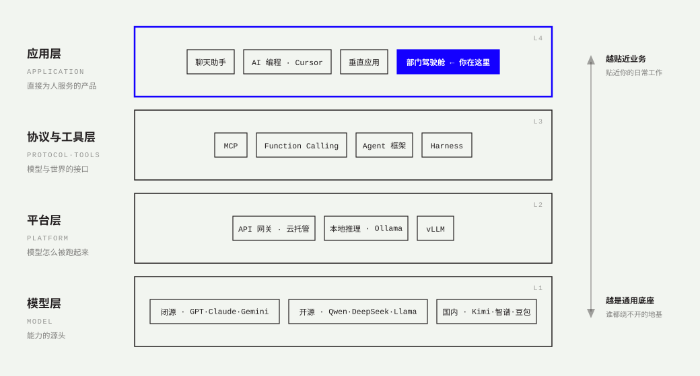
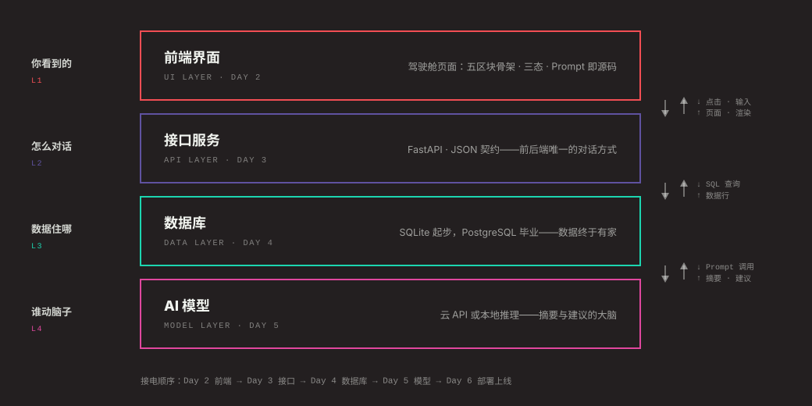
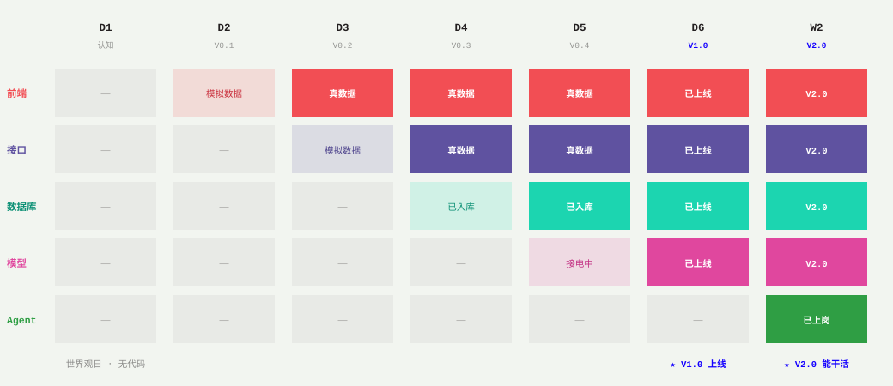
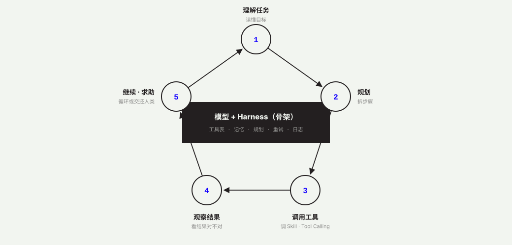

大模型已经泛化，人类还没有。
第一周，用 AI 完成一个全栈项目。第二周，把项目升级成会调用 Skills、能够执行任务的部门 Agent。
驾驶舱只是载体——真正交付的，是学员对这个行业的认知：时代、生态、架构、模型、智能体。
这门课的第一课不是「FDE 是谁」，
而是你生活在一个什么样的时代。
前方部署工程师：被派到业务一线、对结果负责的工程师。不等需求文档，自己走进部门、看懂问题、建成系统、交付价值。
在这门课里，FDE 不是头衔，是毕业时的状态——你不需要先成为谁，十天后答辩通过的那一刻，你就是。
主线所有人同款：一个部门驾驶舱。30% 换成你自己部门的真实数据与问题——方向卡 Day 1 定稿。
先讲清「我在什么时代、AI 是什么、生态里有什么」，再碰代码。概念课当堂自测，词典随身查。
每日验收 → V1.0 周验收 → V2.0 毕业答辩。验收标准全部公开，AI 导师按表执行。
概念节的视频资源位已留空，现阶段配口播稿 + 图文讲解图；看文档能答对题，就算学会。
为什么写代码突然不值钱了？为什么企业现在需要「懂业务 + 会指挥 AI」的人？答案不在任何一本教材里，在三十年的技术演进里。这条线是 Day 1 第 1 节的讲义，也是整门课的地基。

AI 把「写」的成本打到接近零，但没有消灭工程——值钱的是判断「写什么」、验收「写得对不对」。这门课练的就是这两件事：方向感与验收力。
我们不教打字，教指挥。十天里你写的每一行 Prompt、做的每一次验收、封装的每一个 Skill，都是 AI 原生时代的基本功——学会了，工具怎么换都不慌。
GPT、Claude、DeepSeek、Ollama、MCP、Agent 框架……它们不是一堆乱词，而是四层生态。看懂这张图，出了教室看任何行业文章都拆得开。本课默认从 Kimi 云 API 进入，Day 5 学会「换模型只是换网关后面的牌子」。

读法：你的驾驶舱住在应用层；Day 5 从平台层「接电」；换模型，只是换网关后面那块牌子。四层之间全靠「契约」对话——这就是 Day 3 要讲的事。
Harness、RAG、Eval、Vibe Coding……这些已经是行业日常词汇。词典不是课文，是随身工具：十天里听到任何词发懵，回来查这一页。完整版（含自测 6 题）在公开课 O4——Day 1 快测的词典考点就出自这里。
完整版含「在课程哪里遇到 + 延伸阅读 + 自测 6 题」 → resources/glossary.md
模块是认知单元，天是交付单元。课程从「十天流水」重构为六个模块：先建立世界观，再碰代码；FDE 不是第一课，是你毕业时的状态。
你将建成什么、课程怎么用、为什么是现在——30 分钟自学，本页 00 区就是教材。它是课程的介绍，不是第一课。
演进线 + 生态图两张图快通 · LLM 最小认知 · 四层架构与两周路线——概念只讲 40′，当天就完成 Agent Lab 首战并交出方向卡与线框。完整理论（演进详史 / 生态分层 / 词典 18 词）移入公开课 O1–O4，课前与每晚自学；Day 1 快测 6 题就是免修考试。
四层地图（前端/接口/数据库/模型）· 信息架构 · 约束驱动选型。不单列天数——先在 Day 1 看懂地图，再在 Day 2 用它做第一次选型。
前端 → 接口 → 数据库 → LLM → 部署。同一艘驾驶舱逐层变真：模拟数据 → 真接口 → 真入库 → AI 接电 → 换设备可访问。
Skill 封装 → 异常与边界工程化 → Harness/Agent 决策环 → 多 Skill 编排与人工确认。你的项目开始替你上班。
Agent 接入驾驶舱 · 端到端十条能力证据 · 答辩与互评 · 行业地图自评 + 个人自学路线。答辩通过的那一刻，你就是 FDE。
驾驶舱是载体，认知才是交付物。每个领域都不是孤立的一课——它们在同一艘船上逐层接电。先看清四层，再看每个领域在哪天登场。

点击每一天展开课节。每天 100–140 分钟：概念讲透就停，时间留给动手与验收。课节形式四色标签——概念 / 方法 / 实战 / 验收；每天最后一节永远是验收。

两张图看懂时代与生态，概念只占 40′——当天就碰工具：Agent Lab 五步闭环导师演一遍、学员跟一遍，下课前交出方向卡与 V0.1 线框。完整世界观在公开课 O1–O4，快测 6 题就是免修考试。
第一天动手。不追框架、不追炫技——用原生单页把五区块骨架立起来，第一次独立走完「线框 → Prompt → 生成 → 验收」五步闭环。
前端和后端唯一的对话方式是契约。今天定契约、生接口、把页面上的模拟数据换成真的——三态第一次面对真实世界。
重启就丢的数据不算数据。今天搞懂表、行、主键，SQL 看懂四板斧即可，然后让接口真正持久化——重启不丢，才算有家。
前四天你手里已有 PRD、架构、原型、接口与数据库——今天不给新工具，把世界观、企业数字化五阶段、开发流程、服务器与云原生（含命令行八句实验台）、前后端技术地图收成一张自己的 theory-map.md。
先有全栈地图，再补 LLM 词典。今天无新代码——跟着讲解图把 18 个行业日常词装进脑子：生态四层、Token/幻觉、Prompt/RAG、Eval/护栏、Agent/Harness/MCP，下课前 18 词抽测 ≥12/18 + llm-cognition-card.md。
系统只能看，能力才能用。今天把你周报里最重复的那项工作封装成第一个 Skill：输入、步骤、输出、证据，一个都不能少。
能跑不等于可依赖。上午给 Skill 加边界与异常，下午揭开 Agent 的底牌——模型之外那副叫 Harness 的骨架，才是智能体真正的身体。
一个 Skill 是工具，多个 Skill 编成流程才是同事。今天给流程装上确认点与执行日志——信任不是感觉，是工程设计。
Agent 接入驾驶舱，十条能力证据端到端跑通，站上答辩台。最后画一张自己的行业地图：哪些懂了、哪些要继续自学——课程结束，成长开始。

同一个模型，聊天窗里只会说话，装进 Harness 就会干活——这就是 Day 8 的体感。选择原则：能写死用 Workflow，写不死才上 Agent；Skill 描述写得越好，第 1 步「理解任务」就越不容易跑偏。
视频课位已预留，现阶段概念节配「口播稿 + 讲解图」——看文档能答对题，就算学会。每天最后一节永远是验收：不过，当天补，不拖进明天。
AI 时代的验收责任在人。所有验收标准提前公开，AI 导师按表执行——没有「我觉得还行」，只有 Rubric 全绿。
当日 Rubric 全绿才算完：产物能跑、证据留档、概念抽测过线。不过当天补，不拖进明天。
AI 导师内置当日快捷问题：「帮我验收 V0.x」「这个报错是谁的锅」「解释一下今天的 XX 概念」。
换设备能开、十条链路全绿、能讲清每一层为什么这么选。讲不清选型的，回去补 M2。
Week1 复盘：哪些概念还懵——回查词典与讲解图，带着问题进 Week2。
8 分钟演示（作品 3′ + 架构 3′ + 迭代故事 2′）+ 十条能力证据 + 回答「你的 Agent 什么时候会选错」。答得出，才真的懂 Harness。
行业地图自评 + 90 天自学路线——课程结束，成长开始。我们是引路人，后面的路你自己走。
不是课文，是工具：公开课负责完整，词典用来查，清单用来延伸，速查卡放在手边。全部在 class/ 目录下，随课程包分发。
主课快通，公开课完整：O1 时代演进 / O2 LLM 与编排深化 / O3 生态与基建 / O4 新概念词典 / O5 毕业后的路线。Day 1 快测考点全在这里——课前与每晚自学。
open-course/README.md每词三行：一句话定义、在课程第几天遇到、延伸阅读。附自测 6 题——Day 1 抽测范围。
resources/glossary.mdM1 世界观日的课后延伸：视频、文章、榜单各就各位，按「30 分钟 / 半天 / 一个周末」分级。
resources/reading-list.mdM2–M3 手边卡：每层「是什么 / 为什么 / 怎么选 / 挂了什么症状」，选型吵架时翻这张。
resources/cheatsheet-four-layer.mdD2 / D5 实战手边卡：四要素模板、迭代口诀、常见翻车现场与修正手法。
resources/cheatsheet-prompt.md